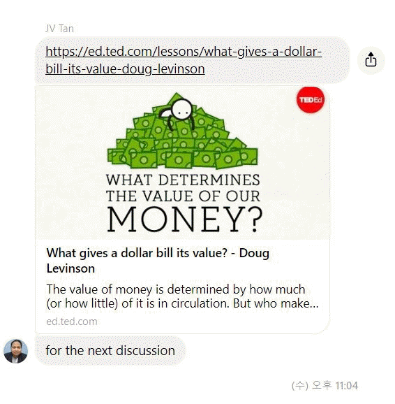

◈예건이가 락다운기간 테드익스페디션수업으로 새로운 시대를 준비하고 있습니다 예건이가 빈스선생님과 테드 익스페디션수업을 진행한지 2주가 넘어가고 있습니다. 처음에 에드워드샘에 의해서 만들어진 이 수업은 일런 머스크의 스페이스엑스 프로젝트를 모티브로 삼아 그의 발자취를 따라가며서 벌어지는 많은 성과속의 담겨진 과학기술과 어젠다들을 아이들과 함께 느껴보는 것이었습니다. 왜 공부를 해야 하는지...... 그로 인해 아이들이 학습해야 할 수학적인 과제 , 왜 우리가 수학을 공부해야 하는지 , 가령 화성까지 도달하려면 어떤 괘도로 비행해야 하며 과학자들이 계산하는 경로는 어떤 방식으로 유추했는지 가장 쉽게 이해할 수 있는 수학적 개념을 꺼내어 아이들과 이야기하면서 수학의 필요성과 호기심을 높이는 계기로 삼았습니다. 또한 화성의 토양과 대기는 어떤 물질로 만들어져 있으며 어떻게 대기를 뚫고 화성지표에 착률할 수 있는지 또 그곳에 살아남기위해 필요한 산소와 온도를 높이기 위해 탄소를 어떻게 생성시켜야 하는지 등에 대해 아이들과 이야기하는 것을 보았습니다. 
초등고학년때 또는 중등시절에 나에게도 이런 학습이 주어졌다면 정말 과학이 재미있었을 텐데 하면서 과거 제가 배웠던 시절을 한탄스럽게 떠올려 보았습니다. 많은 관련 영상이 있었기에 쉽게 아이들과 그 영상을 보며 필요한 지식을 놀랄 정도로 빠르게 흡수했으며 그 영상을 통해 아이들이 갖추어야 할 기본지식을 쉽게 얻을 수 있 음을 확인 할 수 있게 되었습니다. 기존의 일반수업과는 다르게 아이들이 쉽게 몰입할 수 있고 이해와 사고의 확장을 위해서는 놀라운 집중력이 필요했지요.
과학과 인문에 좀 더 관심을 갖게.... 아이들의 관심을 끌어내는 빈스샘의 특별함을 볼 수 있는 수업이었어요. 처음에는 관심있게 만드는 호기심 소재로 출발해서 지금은 테드 에드에서 다루는 과학과 인문의 상식들의 호기심을 일으키는 어젠다로 많이 전환되었음을 최근 볼 수 있었어요. 예건이가 많이 어른스러워지고 문제를 바라 보는 시각도 다면적으로 바뀌는 것을 보고 조금씩 이 수업에 대해서 확신을 갖게 되었습니다. 앞으로 계속 지켜보면서 더욱 훌륭하게 이수업을 만들어 가도록 하겠습니다.
|